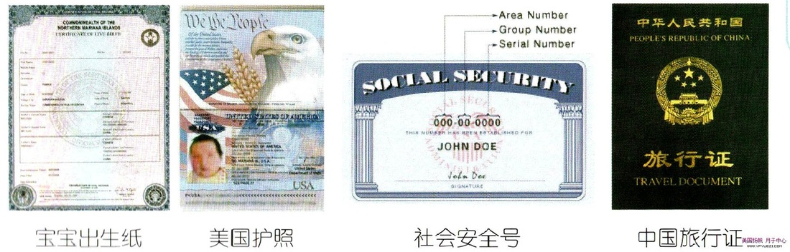

夏威夷太美月子中心服务流程
第一步：服务的开始
1.专业咨询 正式签约
太美月子中心负责为客人提供详细咨询，向客人介绍赴夏威夷生子的流程，各项服务，以及在夏威夷生活情况等等。 太美月子中心会根据您的选择的类型安排保留好房间，迎接您的入住。当您与太美月子中心确定服务关系后，我们将履行我们的服务条款同时与您正式签约。
2. 个性化方案 全方位准备
太美月子中心会根据客户的不同需求，量身定制赴夏威夷生产方案。为了您能预定到理想的套餐以及房型我们建议您提前2至4个月进行预订。 出发前我们将为您进行全方位的行前准备以及辅导，我们会为您提供您入住月子中心当地的气候、环境以及需携带的生活必需品等重要注意事项。
第二步：美国生子
1、入住中心 贴心服务
抵达夏威夷办理入关手续后中心派专车接机。服务团队迎接您的入住并帮助您熟悉中心周边环境以及了解服务日程安排。入住后根据订房合同支付款项。 待产期间，将全程照顾，提供贴心服务。饮食标准因套餐级别不同而异，无限量提供牛奶、水果、果汁、甜点。。
2、待产生活及医院分娩
中心在待产期间预约医生和您见面，每周协助预约医生进行产检，全程提供车辆接送服务，同时安排了丰富的外出活动包含周边购物景点旅游。 夏威夷医院生产设备先进确保宝宝及妈妈的安全，中心陪护人员协助办理入、出院手续及生产时的接送、探视，并全程陪同翻译及医院送餐。
3、 月子护理及宝宝证件
月子期间中心采用一对一全日式照料，专职护理妈妈及宝宝的生活，专业指导母乳喂养及产后恢复。提供美国奶粉、纸尿裤、婴儿衣服、奶瓶、温奶器、 体重秤、医用黄疸灯、日常用品及医用品等。协助办理美国宝宝出生纸、美国护照、中国旅行证及领取美国社会安全号码。
(1)、社会安全号SSN
SSN会在孩子出生后的2周左右寄到你当时在医院登记的地址，人口办公室进行必要的核对后将孩子的人口信息录入数据库，并核发孩子的社会安全号。
(2)、出生纸
父母都不是美国公民，一般都要买3份（复印件无效)，将来到国内给上户口（如果你想上的话），入学，甚至将来看病就医结婚生子都会用得上，一般都是买3份，以备不时之需。
(3）、出生纸三级认证
1，先将官方出生纸做中文翻译。
2，再做翻译员公证。
3，然后送州政府认证。
4，最后送中领馆认证。
(4)，美国护照，申办美国护照须下列文件
1，baby的出生纸。
2，六个月内所拍摄的二英寸×二英寸近照两张：要求专业摄影师拍摄的，其尺寸为2英寸x2英寸，头部大小从一英寸至一又八分之三英寸。
3，填妥申办护照申请表FORM DS-11。
4，工本费40美元 + 12美元的Security费 (由于采用Micro chip而增加的费用)，如果在邮局办理的话, 还有30美元的邮局处理的费用(含快递)
5，要求父母及新生儿都在场, 父母需要提供身份证明, 所以,不要忘记带驾驶执照, 要求父母签字, 而且宣誓。
(5)，中国旅行证
中国旅行证的有效期是两年有效。在中国驻美国总领馆办理，中国驻洛杉矶总领事馆的工作时间是上午9点到下午2点。
1，护照/旅行证申请表（注意将内容填全）
2，照片2张（用于申请护照的照片即可）
3，宝宝的美国护照及照片页的复印件
4，父母护照及护照资料页的复印件，I-94表的复印件。
如果爸爸不能到场，爸爸就需要办理委托配偶办理旅行证的公证。 回国时由中国驻美大使馆颁发给孩子的《中国旅行证》在两年后需出境补办一次，或是直接在国内申请“亲子团聚人员申请永久居留”。
第三步： 宝宝的成长
1、 宝宝回国
全部证件办理完毕，母亲也正好坐完月子，在太美月子中心的协助下着手计划回国。回国之前协助办理宝宝的疫苗接种服务，并长期提供美国产品代购服务。
2、 宝宝的教育
长期协助办理美国留学，家长陪读签证。
3、 宝宝家庭的规划
提供美国投资移民政策以及最新动态的资讯。
